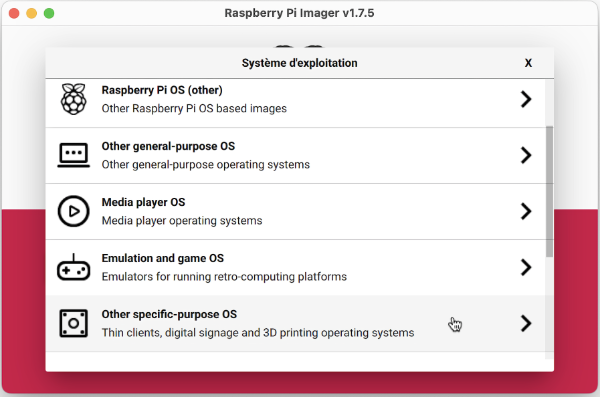
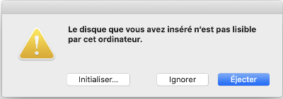
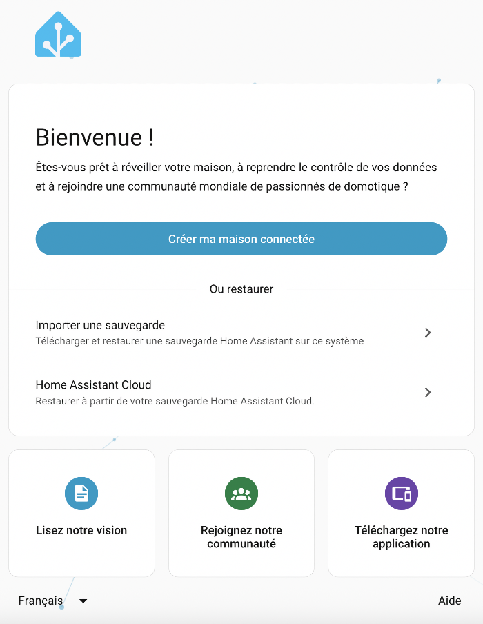

58. Home Assistant au coeur de votre système domotique¶
58.1 En résumé...¶
Voici un résumé des informations essentielles du ou des prochains chapitres.
Notez que certaines fiches, qui font partie intégrante du cours, pourraient ne pas figurer dans ce résumé.
Je vous recommande d'effectuer une lecture de l'ensemble des fiches de ces chapitres afin de bien saisir les enjeux.
Installation de home assistant et premier acces¶
Bien suivre les étapes sur cette fiche!
La console home assistant¶
La console Home Assistant se reconnaît à l'invite ha >.
Résultat à l'écran
Waiting for the Home Assistant CLI to be ready...
\_ \_ \_ \_ \_
| | | | /\ (\_) | | | |
| |\_\_| | \_\_\_ \_ \_\_ \_\_\_ \_\_\_ / \ \_\_\_ \_\_\_ \_ \_\_\_| |\_ \_\_ \_ \_ \_\_ | |\_
| \_\_ |/ \_ \| '\_ \ \_ \ / \_ \ / /\ \ / \_\_/ \_\_| / \_\_| \_\_/ \_\ | '\_ \| \_\_|
| | | | (\_) | | | | | | \_\_ / / \_\_\_\_ \\\_\_ \\_\_ \ \\_\_ \ || (\_| | | | | |\_
|\_| |\_|\\_\_\_/|\_| |\_| |\_|\\_\_\_| /\_/ \\_\\_\_\_/\_\_\_/\_|\_\_\_/\\_\_\\_\_,\_|\_| |\_|\\_\_|
Welcome on Home Assistant command line.
Waiting for Supervisor to start up...
System information
IPv4 Addresses for eth0:
IPv4 Adresses for wlan0: 192.168.1.145/24
IPV6 Adresses for wlan0: fe80:fde8:195c:eb0b:c18a/64
OS Version: Home Assistant OS 9.0
Home Assistant Core: 2022.9.7
Home Assistant URL: http://homeassistant.local:8123
Observer URL: http://homeassistant.local:4357
ha >
Cette console vous donne accès à certaines commandes spécialisées pour Home Assistant.
Le terminal HassOS se reconnaît à l'invite #.
Résultat à l'écran
monnom@MacBook-Pro-de-MonNom ~ %ssh root@192.168.1.145 -p 22222
Welcome to Home Assistant OS.
Use `ha` to access the Home Assistant CLI.
#
Le terminal HassOS est en fait un terminal Linux spécialisé.
Pour entrer une commande Home Assistant dans un terminal HassOS, faire précéder son nom par ha.
Terminal HassOS
Le même résultat serait obtenu dans la console Home Assistant comme suit :
Console Home Assistant
Pour accéder au terminal HassOS à partir de la console Home Assistant, entrez la commande login.
Aucun code d'usager ni mot de passe ne vous sera demandé.
Résultat à l'écran
Eteindre home assistant de facon securitaire¶
Pour arrêter ou redémarrer le système complet :
Rendez-vous dans le menu Paramètres / Système / Matériel.
Dans le coin supérieur droit, cliquez sur les trois points verticaux.

ou
Terminal HassOS
ou
Terminal HassOS
Pour redémarrer seulement le coeur de Home Assistant :
- Rendez-vous dans le menu Paramètres / Système.
- Cliquez sur le lien Redémarrer qui apparaît dans le coin supérieur gauche de l'écran.

ou
Terminal HassOS
Dossier config¶
Sur le Web, on parle souvent du dossier config de Home Assistant. C'est celui qui contient le fichier configuration.yaml. Son emplacement sera différent selon le type d'installation de Home Assistant.
Avec HassOS, il s'agit en fait du dossier /mnt/data/supervisor/homeassistant.
Ainsi, si on vous demande de placer un fichier dans le dossier config/www, il faut plutôt le placer dans le dossier /mnt/data/supervisor/homeassistant/www.
58.2 Installation de Home Assistant et premier accès¶
Home Assistant est un excellent logiciel domotique à code source ouvert qui peut être installé entre autres sur un Raspberry Pi.
Dans les faits, il peut :
- tourner par-dessus le système d'exploitation de votre choix (on parlera de Home Assistant Core)
- tourner par-desssus un système Linux de votre choix, par exemple Raspberry Pi OS (on parlera alors de Home Assistant Supervised)
- tourner dans un conteneur Docker que vous gérez vous-mêmes (on parlera de Home Assistant Container)
- selon la technique recommandée, tourner par-dessus le système d'exploitation Home Assistant Operating System ou HassOS pour les intimes, autrefois appelé Hass.io. HassOS est un système d'exploitation GNU/Linux léger spécifiquement conçu pour exécuter des conteneurs Docker sur des systèmes embarqués. Auparavant, il était basé sur resinOS. Aujourd'hui, il est bâti à partir de Buildroot.
Nous travaillerons ici avec la version installée sur HassOS.
Pour installer Home Assistant selon cette technique, il faut installer une image de HassOS sur la carte micro SD. L'image est disponible directement dans Raspberry Pi Imager.
Une fois le Pi démarré, HassOS téléchargera puis installera automatiquement la toute dernière version de Home Assistant.
Notez que la procédure d'installation de Home Assistant est dite headless, c'est-à-dire que vous n'avez pas besoin de brancher écran ni clavier au Raspberry Pi. La seule utilité d'un écran serait de voir l'état d'avancement de l'installation, mais ce n'est pas nécessaire.
Voici les sections couvertes dans cette procédure :
- Préparer la carte micro SD
- Configurations initiales (clé USB)
- Démarrer le Raspberry Pi
- Accéder à Home Assistant
- Vérifier la présence des fichiers de configuration de la clé USB
Préparer le Raspberry Pi¶
Commencez par prendre connaissance de la fiche suivante afin d'acquérir les bonnes composantes de base : un_raspberry_pi_comme_unite_centrale.
Préparer la carte micro SD¶
Pour installer le système d'exploitation HassOS sur votre Rapsberry Pi :
- Insérez la carte micro SD dans votre ordinateur.
- Si ce n'est pas déjà fait, installez Raspberry Pi Imager sur votre ordinateur puis lancez cette application.
- Choisir Raspberry Pi 4 comme appareil
- Cliquez sur Other specific-purpose OS.

* Choisissez Home automation. * Cliquez sur Home Assistant. * Finalement, choisissez la version la version la plus récente qui correspond à votre Raspberry Pi. * Spécifiez sur quelle carte l'image doit être installée puis cliquez sur Écrire.
* Une fois l'image en place sur la carte micro SD, vous pourriez avoir à l'écran un message du genre « Le disque que vous avez attaché n’est pas lisible par cet ordinateur. » ou, en anglais « The disk you connected cannot be read on this computer ».
* Ceci est normal, cliquez sur Ignorer.
* Spécifiez sur quelle carte l'image doit être installée puis cliquez sur Écrire.
* Une fois l'image en place sur la carte micro SD, vous pourriez avoir à l'écran un message du genre « Le disque que vous avez attaché n’est pas lisible par cet ordinateur. » ou, en anglais « The disk you connected cannot be read on this computer ».
* Ceci est normal, cliquez sur Ignorer.


Lancement intial¶
Lancer le Pi avec la carte que vous venez de préparer. Le système d'exploitation HassOS va démarrer et tenter de télécharger la dernière version de Home Assistant. La connectivité au réseau est tentée via connexion filaire (Ethernet) initialement.
Si connection ethernet n'est pas disponible¶
Connecter écran et clavier (attention écran noir si res. trop élevée)
Attendre que System is ready! apparaisse à la console. À ce point L'installation tente d'accèder à internet pour télécharger du code.
On doit indiquer quel réseau Wi-Fi à utiliser
login nmcli device wifi rescan nmcli device wifi nmcli device wifi connect "Domotique-Pedago" password "domoinfo36" exit banner (pour voir IP)
Suivre le progrès de l'installation via le web (portable doit être le réseau Wi-Fi Domotique-Pedago - pwd: domoinfo36):
http://
Via les logs du terminal:
supervisor logs -f
Downloading Home Assistant Core Image, % NOTE: peut rester près de 10 mins sur le meme pourcentage.
"Detect a running Home Assistant instance" veut dire installation terminée.
host options --hostname ha
banner Home Assistant URL: http://ha .local:8123
(.local: utilise la résolution mDNS)
--
Connecter son laptop au réseau Wi-Fi Domotique-Pedago si pas déja fait (pwd: domoinfo36)
http://ha
Configurations initiales (clé USB) - RÉFÉRENCE¶
Vous l'avez peut-être remarqué, lors de l'installation de Home Assistant, Raspberry Pi Imager ne vous a pas offert l'option MODIFIER RÉGLAGES. En effet, cette option n'est disponible que lors de l'installation de Raspberry Pi OS.
Une technique différente a été prévue pour effectuer les configurations initiales, par exemple le réseau sans fil, le serveur DNS et l'adresse IP statique.
Il s'agit de placer les fichiers de configuration sur une clé USB qui répond à des règles précises :
- La clé doit être vierge et être formatée en FAT32 :
- Sous Windows, l'utilitaire par défaut ne fait pas bien le travail. Vous devez utiliser un autre utilitaire, par exemple MiniTool (voir https://www.minitool.com/partition-disk/fat32-not-an-option.html).
- Sous Mac, il n'y pas cette limite de taille. Choisissez MS-DOS (FAT) dans l'utilitaire de disque.
- La clé doit posséder un volume nommé CONFIG (en majuscules).
- Les fichiers de configuration doivent comporter des sauts de ligne correctement encodés pour Linux (LF).
Les configurations disponibles sont détaillées sur cette fiche,sansfilusb.
Voici un exemple de base :
Fichier network/my-network
[connection]
id=my-network
uuid=votre-uuid-ici
type=802-11-wireless
[802-11-wireless]
mode=infrastructure
ssid=NOM-DU-RESEAU
# Uncomment below if your SSID is not broadcasted
#hidden=true
[802-11-wireless-security]
auth-alg=open
key-mgmt=wpa-psk
psk=MOT-DE-PASSE-DU-RESEAU
[ipv4]
method=auto
[ipv6]
addr-gen-mode=stable-privacy
method=auto
Et voici un exemple avec adresse IP statique :
Fichier network/my-network
[connection]
id=my-network
uuid=votre-uuid-ici
type=802-11-wireless
[802-11-wireless]
mode=infrastructure
ssid=NOM-DU-RESEAU
# Uncomment below if your SSID is not broadcasted
#hidden=true
[802-11-wireless-security]
auth-alg=open
key-mgmt=wpa-psk
psk=MOT-DE-PASSE-DU-RESEAU
[ipv4]
method=manual
address=192.168.1.145/24;192.168.1.1
dns=xxx.xxx.xxx.xxx;8.8.8.8;8.8.4.4;
[ipv6]
addr-gen-mode=stable-privacy
method=auto
Remarquez que le réseau sans fil et l'adresse IP statique peuvent aussi être configurés via l'interface Web de Home Assistant,web une fois que l'installation est terminée (vous aurez cependant besoin initialement d'une connection réseau câblée).
Activation du SSH¶
Pour pouvoir vous connecter au Raspberry Pi via SSH et ainsi avoir un accès complet du système de fichiers du Raspberry Pi, vous devez générer sur votre ordinateur la paire de clés publique et privée puis copier la clé publique dans un fichier nommmé authorized_keys à la racine du volume CONFIG.
Suivez bien les instructions qui suivent, un petit écart fera en sorte que ça ne fonctionne pas!
Générer les clés SSH¶
Sous Mac ou Linux, travaillez directement dans une fenêtre Terminal.
Sous Windows, pour effectuer les mêmes manipulations, vous devez ouvrir une fenêtre Terminal (et non CMD) ou PowerShell. Vous pouvez également installer la console Git Bash (https://git-scm.com/downloads).
Pour vérifier si les clés SSH ont déjà été générées, entrez cette commande sur votre ordinateur :
Terminal sur l'ordinateur
Nous allons utiliser l'algorithme Ed25519 qui est l'algorithme recommandé de nos jours.
La clé publique est stockée dans le fichier id_ed25519.pub et la clé privée, dans le fichier id_ed25519.
Si les clés n'existent pas, vous devez les générer les clés à l'aide de cette commande :
Terminal sur l'ordinateur
Acceptez l'emplacement par défaut (sous Windows : C:\Users\MonNom.ssh\id_ed25519, sous Mac : /Users/monnom/.ssh/id_ed25519).
Afin d'augmenter la sécurité, vous pouvez entrer un mot de passe lorsqu'on vous demande un passphrase. Par contre, ceci obligera à entrer ce mot de passe à chaque connexion. Vous pouvez donc appuyer sur Entrée sans entrer de mot de passe.
Fichier authorized_keys¶
Il faut maintenant copier la clé publique dans un fichier à la racine du volume CONFIG.
La technique sera différente selon votre système d'exploitation.
MacOS ou Linux¶
Sous macOS ou Linux, le fichier sera créé et rempli par cette commande :
Terminal sur l'ordinateur
Windows¶
Sous Windows, la redirection (caractère >) cause parfois un mauvais fonctionnement (saut de ligne superflu à la fin de la clé, caractères représentés par des rectangles en début de fichier, caractères qui ressemblent à du chinois).
Il est donc préférable de procéder comme suit :
- Créez un fichier texte vierge sur la clé USB dont l'encodage est ANSI ou UTF-8 sans BOM et nommez-le authorized_keys (aucune extension).
Attention : vous devez utiliser un éditeur adapté à ce type de tâche, par exemple Geany.
- Ne créez pas le fichier en faisant un clic droit dans l'explorateur de fichiers / Nouveau fichier.
- N'utilisez pas non plus le bloc notes de Windows pour créer ce fichier.
- Ne renommez pas le fichier id_ed25519.pub en authorized_keys.
- Affichez le contenu du fichier id_ed25519.pub à l'écran.
PowerShell
* Copiez-collez dans ce fichier la clé qui a été affichée à l'aide de la commande cat. Important : il faut copier le contenu du fichier et non copier le fichier lui-même car celui qui demeure sous Windows utilisera les caractères de saut de ligne de Windows (CR LF) et celui qui ira sur le système Linux utilisera les sauts de ligne de Linux (LF).Démarrer le Raspberry Pi¶
Le système d'exploitation est maintenant installé et les configurations de bases sont réalisées.
Passons maintenant à l'installation de Home Assistant.
- Coupez l'alimentation du Raspberry Pi si ce n'est pas déjà fait.
- Retirez la carte micro SD de l'ordinateur de façon sécuritaire puis insérez-la dans le Raspberry Pi.
- Si requis, insérez également dans le Pi la clé USB qui contient vos configurations SSH, d'adresse IP et/ou de réseau sans fil.
- Mettez le Pi sous tension.
Vérifier la date du système¶
Sur certains réseaux, le service NTP (protocole de diffusion du temps en réseau ou, en anglais, Network Time Protocol) ne fonctionne pas, ce qui empêche le Pi d'avoir la bonne date et la bonne heure. Ceci peut empêcher le bon fonctionnement de l'installation.
Si vous avez un doute sur les configurations de votre réseau, branchez un clavier et un écran au Pi.
Remarquez que si vous ne disposez pas d'un écran et d'un clavier, il est possible d'effectuer certaines vérifications à l'aide d'une connexion SSH mais le tout est plus facile avec écran et clavier.
Vous devriez voir cet écran dès que HassOS est rendu assez loin dans son travail d'installation.
Résultat à l'écran
Waiting for the Home Assistant CLI to be ready...
[LOGO]
Welcome on Home Assistant command line interface.
Waiting for Supervisor to start...
Home Assistant Supervisor is running!
System information
IPv4 Adresses for wlan0: 192.168.1.145/24
IPV6 Adresses for wlan0: fe80:fde8:195c:eb0b:c18a/64
IPv4 Adresses for end0: 192.168.1.140/24
IPV6 Adresses for end0: fe80:a310:ae68:cd47:50d4/64
OS Version: Home Assistant OS 16.2
Home Assistant Core: landingpage
Home Assistant URL: http://homeassistant.local:8123
Observer URL: http://homeassistant.local:4357
System is ready! Use browser or app to configure.
ha >
À partir de l'invite ha >, passez au terminal HassOS :
Console Home Assistant
Lorsque vous voyez l'invite #, vous pouvez entrer cette commande :
Terminal HassOS
La date pourrait être au format UTC (Coordinated Universal Time) ou encore dans le fuseau horaire configuré.
Si la date n'est pas valide, prenez le temps de l'ajuster. On commence par définir le fuseau horaire puis on entre la date et l'heure selon ce fuseau.
Terminal HassOS
Vérifier les configurations réseau¶
Pour installer Home Assistant, HassOS aura besoin d'accéder à Internet.
Prenez le temps de vérifier si vos configurations sont bonnes :
- Accédez au terminal HassOS comme vous l'avez fait pour vérifier la date.
- Tentez de rejoindre l'adresse IP de Google.
Terminal HassOS
* Si vous obtenez le message 8.8.8.8 is alive!, vous pouvez vérifier si le DNS fonctionne en tentant de rejoindre le domaine de Google.Terminal HassOS
* Si vous obtenez le message google.com is alive!, vous savez que votre accès au réseau est bien configuré. * Pour régler un problème de réseau, vérifiez à quel réseau vous êtes branchés.Terminal HassOS
Si le sans fil est correctement configuré, vous devriez avoir au moins une ligne dont la première colonne affiche le nom de votre fichier de configuration réseau et dont la dernière colonne affiche wlan0.
Le réseau peut également être disponible par câble. Vous aurez alors une ligne dont la première colonne affiche Wired connection 1 et la dernière, end0.
Résultat à l'écran
NAME UUID TYPE DEVICE
Wired connection 1 85f43ecc-5f84-303c-8510-755f0b81e131 ethernet end0
my-network-cegep bdc2edc4-2543-4d11-b8b3-cfb6b0b18b0e wifi wlan0
my-network-maison 84cd8755-2349-464e-9540-6df10ba7aef6 wifi --
Si vous n'obtenez aucune ligne avec eth0 et aucune ligne avec wlan0, ou si malgré tout vous n'arrivez pas à faire un ping vers google.com, référez-vous à la fiche « configurer_l_acces_au_reseau_dans_home_assistant » pour régler le problème.
Installation automatique de Home Assistant¶
Dès que le Pi est branché, qu'il a un accès réseau et que son horloge est correctement configurée, HassOS pourra finaliser l'installation.
Soyez patients, cette opération peut prendre jusqu'à 20 minutes!
Pendant que l'installation est en cours, Vous pouvez accéder à l'interface Web de Home Assistant pour voir la progression (voir détails plus bas).
Une fois l'installation complétée, vous pouvez retirer la clé USB qui contient les configurations. Vous n'en aurez plus besoin puisque les fichiers qu'elle contient ont été copiés sur le Pi.
Accéder à Home Assistant¶
L'accès se fait via un navigateur sur votre ordinateur ou via l'application Home Assistant sur votre téléphone.
Dans votre navigateur ou dans l'application Home Assistant, entrez l'un des URL suivants :
- http://172.19.240.200:8123 (remplacez 172.19.240.200 par l'adresse IP du Pi)
Notez que si vous travaillez dans un environnement qui comprend plusieurs installations de Home Assistant, par exemple une salle de classe, seule la version avec l'adresse IP fonctionnera.
Pendant que HassOS installe Home Assistant, vous obtiendrez un message à cet effet :

Pendant l'installation, vous pouvez cliquer sur Afficher les détails afin de voir la journalisation (log) des opérations en cours.
Les informations qui apparaissent sont également enregistrées dans un fichier journal que vous pouvez consulter à partir du terminal HassOS à l'aide de cette commande :
Terminal HassOS
Dans le terminal HassOS, vous saurez que l'installation est terminée quand vous verrez des lignes de ce genre au bas du fichier journal.
Résultat à l'écran
INFO (MainThread) [supervisor.homeassistant.core] Detect a running Home Assistant instance
INFO (SyncWorker\_2) [supervisor.docker.interface] Cleanup images: ['ghcr.io/home-assistant/raspberrypi3-homeassistant:landingpage']
Dans l'interface Web, vous saurez que l'installation est terminée quand vous verrez l'écran de bienvenue.

Cliquez sur Créer ma maison connectée puis suivez les étapes pour finaliser la configuration initiale de Home Assistant.
Vérifier la présence des fichiers de configuration de la clé USB¶
Si vous avez utilisé une clé USB pour fournir des fichiers de configuration à Home Assistant, le système les aura copiés sur le Pi lors du démarrage.
Notez que la clé USB n'a plus besoin d'être branchée au Pi à cette étape.
Pour vérifier la présence des fichiers de configuration réseau :
Terminal HassOS
Les fichiers que vous aviez placés dans le dossier network de la clé USB devraient avoir été copiés ici.
Résultat à l'écran
Pour vérifier la présence de la clé SSH :
Terminal HassOS
Résultat à l'écran
Si les fichiers de configuration ne sont pas présents dans ces dossiers, c'est que le système n'a pas reconnu la clé ou encore que ses fichiers n'ont pas été reconnus comme étant des fichiers de configuration.
Pistes de vérifications :
- Quand vous branchez la clé dans votre ordinateur, est-ce que le volume s'appelle CONFIG en majuscules?
- Est-ce que la clé est formatée en FAT32?
- Est-ce que les noms de fichiers et de dossiers correspondent à ce qui est mentionné dans la procédure?
- Est-ce que les caractères de fin de ligne ont été correctement configurés dans les fichiers?
Une fois les problèmes identifiés et corrigés, attendez d'abord que l'installation de Home Assistant soit terminée.
Rebranchez la clé USB sur le Raspberry Pi puis entrez la commande reboot dans le terminal HassOS. Si tout est correct, les fichiers seront cette fois copiés sur le Pi.
Quand vous avez la confirmation que le fichier authorized_keys a été correctement copié, vous pouvez tenter de vous connecter au Raspberry Pi via SSH :
Terminal de l'ordinateur
Pour plus d'information¶
« Network ». Github - home-assistant/operating-system. https://github.com/home-assistant/operating-system/blob/dev/Documentation/network.md
« Debugging the Home Assistant Operating System ». Home Assistant. https://developers.home-assistant.io/docs/operating-system/debugging/
« FAQ ». Home Assistant. https://www.home-assistant.io/faq
« Why does Home Assistant have so many names? ». Home Assistant Guide. https://home-assistant-guide.com/2020/09/22/why-does-home-assistant-have-so-many-names/
« Guide: Connecting Pi with Home Assistant OS to wifi (or other networking changes) ». Home Assistant. https://community.home-assistant.io/t/guide-connecting-pi-with-home-assistant-os-to-wifi-or-other-networking-changes/98768
58.3 Le terminal HassOS et la console Home Assistant¶
En général, il n'est pas nécessaire d'accéder au terminal HassOS. Tout se fait via la page Web de votre Home Assistant ou via l'application mobile avec une des adresses données ici,acceder.
Cependant, plusieurs opérations intéressantes peuvent être réalisées dans le terminal HassOS, par exemple accéder au système de fichiers complet sur le Raspberry Pi ainsi qu'aux utilitaires fournis par le système d'exploitation.
Dans cette fiche :
- Console Home Assistant vs Terminal HassOS
- Branchement avec clavier et écran
- Branchement SSH
- Console Home Assistant
- Quelques commandes utiles
- Passer de la console Home Assistant au terminal HassOS
- Terminal HassOS
- Quelques commandes utiles
- Effectuer une commande Home Assistant dans terminal HassOS
- Passer du terminal HassOS vers la console Home Assistant
Console Home Assistant vs Terminal HassOS¶
La console Home Assistant et le terminal HassOS sont deux environnements en ligne de commande qui vous permettent d'effectuer différentes opérations sur le Raspberry Pi et sur Home Assistant.
Attention : aucun code d'accès n'est demandé pour accéder à la console Home Assistant ou au terminal HassOS à partir d'un clavier et d'un écran branchés directement sur le Raspberry Pi.
Donc, quiconque a accès physique au Pi pourra contrôler le système!
Branchement avec clavier et écran¶
Si vous branchez un clavier et un écran au Raspberry Pi, vous verrez à l'écran la console Home Assistant.
Les détails de la console Home Assistant sont donnés plus bas.
Branchement SSH¶
Si vous vous connectez au Pi via SSH, vous accédez directement au Terminal HassOS.
Les détails du Terminal HassOS sont donnés plus bas.
Console Home Assistant¶
La console Home Assistant permet d'entrer des commandes propres à Home Assistant.
On l'appelle aussi Home Assistant Command Line Interface ou Home Assistant CLI.
Elle se reconnaît à l'invite ha >.
Résultat à l'écran
Waiting for the Home Assistant CLI to be ready...
[LOGO]
Welcome on Home Assistant command line interface.
Waiting for Supervisor to start...
Home Assistant Supervisor is running!
System information
IPv4 Adresses for wlan0: 192.168.1.145/24
IPV6 Adresses for wlan0: fe80:fde8:195c:eb0b:c18a/64
IPv4 Adresses for end0: 192.168.1.140/24
IPV6 Adresses for end0: fe80:a310:ae68:cd47:50d4/64
OS Version: Home Assistant OS 16.2
Home Assistant Core: landingpage
Home Assistant URL: http://homeassistant.local:8123
Observer URL: http://homeassistant.local:4357
System is ready! Use browser or app to configure.
ha >
Cette console vous donne accès à certaines commandes spécialisées pour Home Assistant.
Entrez la commande help pour avoir la liste des commandes disponibles.
Console Home Assistant
Quelques commandes utiles¶
Voici quelques commandes Home Assistant utiles.
- banner (pour faire afficher l'écran d'accueil avec les adresses IP)
- login (pour passer au terminal HassOS)
- network info (informations sur le réseau)
- info (pour connaître la version de différentes couches de Home Assistant)
- core restart (pour redémarrer seulement le coeur de Home Assistant)
- core update (pour mettre à jour le coeur de Home Assistant)
- core check (pour vérifier l'état du coeur de Home Assistant)
- backups new --name nomdubackup (pour effectuer une sauvegarde de Home Assistant)
- host shutdown (pour éteindre proprement le Raspberry Pi)
- host reboot (pour redémarrer complètement le Raspberry Pi)
Pour plus de détails : https://www.home-assistant.io/common-tasks/os/
Passer de la console Home Assistant au terminal HassOS¶
Pour accéder au terminal HassOS à partir de la console Home Assistant, entrez la commande login.
Aucun code d'usager ni mot de passe ne vous sera demandé.
Résultat à l'écran
Terminal HassOS¶
Le terminal HassOS est un terminal Linux.
Les commandes qui y sont disponibles sont passablement différentes de celles qui sont disponibles sur d'autres distributions Linux puisque HassOS est un système d'exploitation optimisé pour Home Assistant.
Le terminal HassOS se reconnaît à l'invite #.
Résultat à l'écran
monnom@MacBook-Pro-de-MonNom ~ %ssh root@192.168.1.145 -p 22222
Welcome to Home Assistant OS.
Use `ha` to access the Home Assistant CLI.
#
HassOS utilise l'interpréteur de commande /bin/ash.
Selon Wikipédia1 :
Almquist shell (aussi connu sous le nom de A Shell ou ash) est un interpréteur de commandes dérivé du Bourne shell du Système V Release 4 (SVR4), développé à l'origine par Kenneth Almquist. C'est un Shell Unix petit, rapide et compatible avec la norme POSIX, et c'est pourquoi il est très utilisé dans les systèmes d'exploitation embarqués.
Pour connaître la liste des commandes disponibles :
Terminal HassOS
Quelques commandes utiles¶
Voici quelques commandes utiles à effectuer sur le terminal HassOS :
- ls, cp, mv, rm, mkdir (commandes habituelles pour gérer fichiers et dossiers)
- halt (pour arrêter complètement le système)
- date (pour connaître ou ajuster la date du système d'exploitation)
- journalctl (pour voir les messages enregistrés dans un fichier journal donné)
- vi (pour éditer un fichier)
- nmcli con show (pour voir les informations sur les connexions réseau)
- ssh -V (pour connaître le nom du serveur SSH et sa version)
- docker ps (pour afficher la liste des conteneurs Docker)
- lsusb (pour voir si la clé USB Z-Wave est reconnue)
Effectuer une commande Home Assistant dans terminal HassOS¶
Si vous êtes dans le terminal HassOS et que vous désirez entrer une commande spécifique à Home Assistant, il est possible de le faire sans sortir du terminal HassOS.
Il suffit de faire précéder la commande par ha.
Terminal HassOS
Le même résultat serait obtenu dans la console Home Assistant comme suit :
Console Home Assistant
Passer du terminal HassOS vers la console Home Assistant¶
Si vous souhaitez retourner à la console Home Assistant alors que vous travaillez directement sur le Raspberry Pi à l'aide d'un clavier et d'un écran, vous pouvez entrer cette commande :
Terminal HassOS
Dans le cas où vous êtes branchés via SSH, la commande exit mettra fin à la session SSH.
Source¶
- « Almquist shell ». Wikipédia. https://fr.wikipedia.org/wiki/Almquist_shell
Pour plus d'information¶
« Common tasks - Operating System ». Home Assistant. https://www.home-assistant.io/common-tasks/os/
58.4 Éteindre ou redémarrer Home Assistant de façon sécuritaire¶
Comme pour tout système Linux, il n'est pas souhaitable de fermer Home Assistant simplement en débranchant le Raspberry Pi.
Je vous propose ici différentes techniques pour arrêter le système ou pour redémarrer le système complet ou encore une de ses couches logicielles.
Arrêt¶
Interface graphique¶
Rendez-vous dans le menu Paramètres / Système.
Dans le coin supérieur droit, cliquez sur l'icône de démarrage.

Cliquez sur Options avancées / Arrêter le système.

Terminal HassOS¶
Il est également possible d'éteindre le Raspberry Pi à partir du terminal HassOS à l'aide de cette commande :
Terminal HassOS
Redémarrage de Home Assistant¶
Certaines opérations nécessitent un redémarrage de Home Assistant mais pas du Raspberry Pi complet.
Interface graphique¶
Pour redémarrer seulement le coeur de Home Assistant :
- Rendez-vous dans le menu Paramètres / Système.
- Dans le coin supérieur droit, cliquez sur l'icône de démarrage.
- Cliquez sur Redémarrer Home Assistant.
Terminal HassOS¶
Pour redémarrer seulement le coeur de Home Assistant :
Terminal HassOS
Redémarrage complet¶
Si l'opération nécessite un redémarrage complet du Raspberry Pi, suivez ces étapes.
Interface graphique¶
Pour redémarrer complètement le Raspberry Pi :
- Rendez-vous dans le menu Paramètres / Système.
- Dans le coin supérieur droit, cliquez sur l'icône de démarrage.
- Cliquez sur Options avancées / Redémarrer le système.
Terminal HassOS¶
Pour redémarrer le système complet :
Terminal HassOS
58.5 Dossier config¶
Dans la documentation officielle de Home Assistant et dans des groupes de discussion, vous verrez probablement à quelques occasions des instructions qui demandent de placer un fichier dans le dossier config.
Ce dossier est celui qui contient le fichier configuration.yaml. Selon le type d'installation que vous avez effectué, il peut être situé à différents endroits.
Par exemple, si vous avez installé Home Assistant par-dessus le système d'exploitation HassOS, tel que recommandé, le dossier config est en fait /mnt/data/supervisor/homeassistant.
Ainsi, si on vous demande de placer un fichier dans le dossier config/www, il faut plutôt le placer dans le dossier /mnt/data/supervisor/homeassistant/www.
C'est bon à savoir!